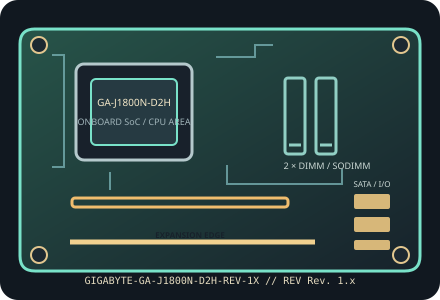

[ INDIVIDUAL COMPONENT // MOTHERBOARDS ]
GIGABYTE GA-J1800N-D2H (Rev. 1.x)
Mini-ITX Bay Trail-D board with a soldered dual-core Celeron J1800. This record follows GIGABYTE’s Rev. 1.x documentation; confirm the revision printed on the physical PCB before selecting firmware.

IDENTIFICATION: Confirm the complete model suffix and PCB revision printed on the board. Select firmware and parts from the documentation for this exact revision; a matching socket or product family alone does not establish compatibility.
Specifications
| Exact model / PCB revision | GIGABYTE GA-J1800N-D2H (Rev. 1.x) |
|---|---|
| Processor / socket | Intel Celeron J1800 Bay Trail-D SoC, dual core, up to 2.41 GHz; soldered BGA processor, no CPU socket or field-replaceable processor. |
| Chipset | Bay Trail-D SoC (memory, graphics and I/O integrated; no separate desktop chipset). |
| Form factor | Mini-ITX, 170 × 170 mm. |
| Memory and slots | Two 204-pin DDR3/DDR3L SO-DIMM slots, dual-channel, up to 8 GB total, non-ECC unbuffered; use supported 1333 MT/s modules and the manual’s population guidance. |
| Expansion | One PCIe 2.0 x1 slot and one half-size Mini PCIe slot. The Mini PCIe connector is not an mSATA storage socket. |
| Storage | Two SATA 3 Gb/s ports; no M.2 storage connector. |
| Network and onboard I/O | Realtek Gigabit Ethernet; onboard audio codec, analog audio jacks and HDMI/VGA display outputs. |
| Power connections | Standard 24-pin ATX main-power and 4-pin ATX12V CPU-power inputs; size the PSU for the complete system and check connector requirements in the revision-matched manual. |
| BIOS / firmware | GIGABYTE UEFI DualBIOS for the GA-J1800N-D2H Rev. 1.x. The J1800 is soldered, so CPU generation upgrades are not possible; use only BIOS files for this model/revision. |
| Enclosure compatibility | 170 mm square Mini-ITX outline and Mini-ITX mounting pattern; use a case with Mini-ITX standoffs, rear-I/O clearance and room for the installed full-height/low-profile PCIe card and cooler. |
Compatibility and revision notes
This is the D2H variant, not the similarly named GA-J1800N-D2P. Its PCIe x1 and mini-PCIe expansion differ from the D2P’s legacy PCI arrangement. Do not treat mini-PCIe as mSATA.
Before assembly, verify the exact CPU support list and minimum firmware, memory generation and population order, storage lane sharing, add-in card dimensions, chassis standoffs and PSU leads in the cited revision-matched manual. Observe ESD precautions and never update with firmware for a similarly named board.
Installation and preservation
Inspect the PCB revision silkscreen, socket or soldered processor, memory slots, power connectors, storage sockets and rear-I/O ports before use. Record BIOS version, date/serial identifiers, installed accessories and test conditions; keep the board manual and firmware tied to its exact model and revision.
Manufacturer sources & manuals
- GIGABYTE — GIGABYTE GA-J1800N-D2H (Rev. 1.x) specificationsOfficial specification record for this motherboard and revision.
- GIGABYTE — GIGABYTE GA-J1800N-D2H (Rev. 1.x) manual, BIOS and support downloadsOfficial revision-specific support page; use its manual, CPU support list and firmware downloads to verify installation and compatibility.
Specifications above are a static reference summary. The matching manufacturer manual, PCB revision and support list are authoritative.